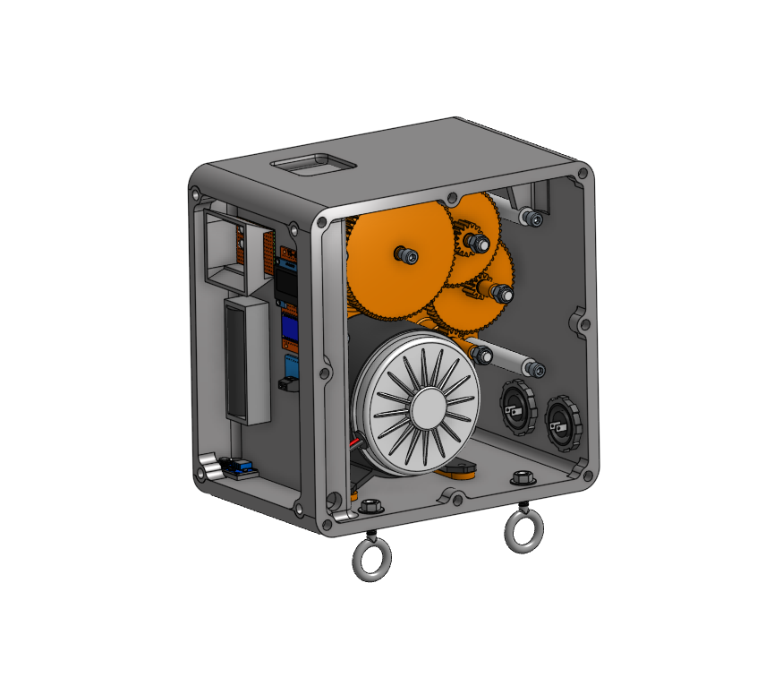

A selection of engineering projects involving mechanical
design, CAD modeling, manufacturing, testing, and analysis.

BAJA SAE – Braking System Research
Researching and evaluating a new braking system
for the SPU BAJA SAE vehicle. Comparing potential
components and analyzing previous system data to
improve braking performance, reliability, and
stopping power.
Skills: Mechanical design, research,
data analysis, component selection.

BAJA SAE – CVT Cover Design
Collaborated with a multidisciplinary team to
design and manufacture an improved continuously
variable transmission (CVT) cover. I compared the
original and redesigned covers through testing
and airflow data analysis with pitot tube to gain
measurable insight into the performance of the new design.
Skills: SolidWorks, CAD design,
manufacturing, testing, data analysis, fluid mechanics.

BAJA SAE – Front Differential Integration
Working with a cross-functional team to integrate
a front-wheel-drive system into the BAJA vehicle.
Focused on component packaging, front differential
placement, and mechanical integration.
Skills: CAD modeling, mechanical
integration, packaging, teamwork.

Junior Design Gravity Powered Light Source
Designed and built a gravity-powered light source with a
multi-disciplinary team over a 10 week period.
Developed a mechanical system that converts gravitational
potential energy into electrical energy to power an LED light.
I desigend the housing, spool system and assisted with electircal subsystem integration, and
collaborated with teammates to ensure the system met performance requirements.
Skills: Engineering analysis,
SolidWorks, Mechanical Design.
Mechanical Engineering Intern
Travis Industries Inc. | Mukilteo, WA
June 2026 – September 2026
-
Conducted time studies and developed
time-costing reports for manufactured
finished goods to identify workflow
inefficiencies.
-
Designed custom manufacturing fixtures
to improve assembly processes and
eliminate production bottlenecks.
-
Reverse-engineered legacy fixtures by
creating detailed 3D CAD models from
physical components and existing 2D
engineering drawings.
-
Used an EinScan Rigil 3D scanner to
capture complex surface profiles of
fireplace logs and developed quality
control gauges in SolidWorks from those 3D models.
Additional Experience
Athletics Communications Student Media Assistant
Seattle Pacific University | Present
Support university athletics communications and
media operations while balancing academic and
extracurricular responsibilities.
Engineering tools, software, and manufacturing
experience developed through coursework, projects,
and professional experience.
CAD & Design
- SolidWorks – 6+ years
- Onshape
- 3D CAD modeling
- Reverse engineering
- Engineering drawings
Manufacturing
- Manual CNC mill and lathe
- Welding
- Fixture design
- 3D scanning
- SPU shop certified
Analysis & Software
- MATLAB certified
- Engineering data analysis
- Performance testing
- Time studies
- Technical documentation
Seattle Pacific University
Bachelor of Science – Mechanical Engineering
Seattle, Washington
Expected Graduation: June 2027
GPA: 3.48
Relevant Coursework
Statics, Dynamics, Mechanics of Materials,
Thermodynamics, System Dynamics, Experimental Methods,
Fluid Mechanics, Properties of Materials, Heat Transfer,
and Mechanical Design.
Academic Recognition
- Dean's List
- SPU Success Award
- SPU Merit Scholarship